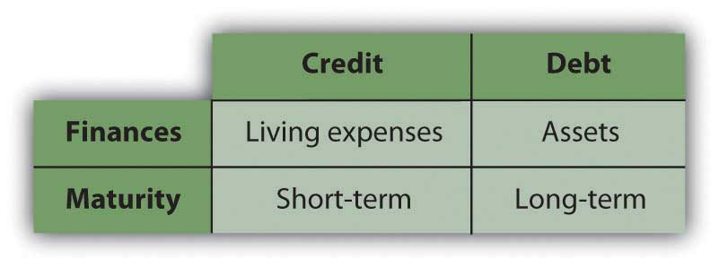
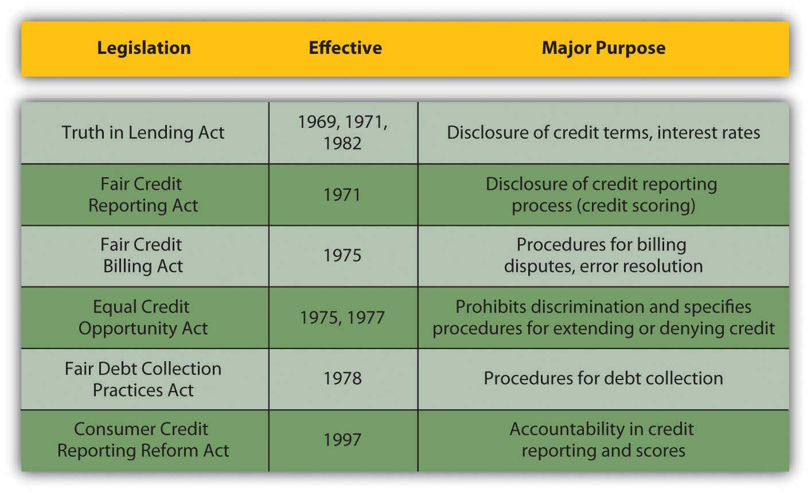

“Credit” derives from the Latin verb credere (to believe). It has several meanings as a verb in common usage—to recognize with respect, to acknowledge a contribution—but in finance, it generally means to allow delayed payment.
Both credit and debt are forms of borrowing. Credit is distinguished from debt in both its purpose and duration or timing, although in casual conversation the words are used interchangeably. Credit is used to purchase goods and services, to finance living expenses, or to make payments more convenient by delaying them for a relatively short time. Debt, on the other hand, is used to finance the purchase of assets—such as a car or a home—rather than to delay payment of recurring expenses.
The costs of credit and of debt are likewise different, given their different uses and time horizons. Often, people get into some trouble when they cannot distinguish between the two and choose the wrong form of financing at the wrong time. Figure 7.6 "Credit versus Debt" distinguishes credit from debt.
Figure 7.6 Credit versus Debt
Credit is issued either as installment credit or as revolving credit. Installment creditA form of credit used to purchase consumer durables, usually issued by one vendor for one item. is typically issued by one vendor, such as a department store, for a specific purchase. The vendor screens the applicant and extends credit, bearing the default riskThe risk that a borrower will not be able to meet interest obligations or principal repayment., or risk of nonpayment. Payments are made until that amount is paid for. Payments include a portion of the cost of the purchase and the cost of the credit itself, or interest.
Installment credit is an older form of credit that became popular for the purchase of consumer durables (i.e., furniture, appliances, electronics, or household items) after the First World War. This form of credit expanded as mass production and invention made consumer durables such as radios and refrigerators widely available. (Longer-term installment purchases for bigger-ticket assets, such as a car or property, are considered debt.)
Revolving creditA form of credit used to purchase consumer durables issued by a bank of finance company to purchase many items from many vendors. extends the ability to delay payment for different items from different vendors up to a certain limit. Such credit is lent by a bank or finance company, typically through a charge cardRevolving credit that must be periodically paid in full. or a credit cardRevolving credit that may not be paid in full, creating an interest expense.. The charge card balance must be paid in full in each period or credit cycleThe time period for extending and paying credit., while the credit card balance may not be, requiring only a minimum payment.
The credit card is a more recent form of credit, as its use became widely practical only with the development of computing technology. The first charge card was the Diners’ Club card, issued in 1950. The first credit card was the Bank Americard (now called Visa), issued by Bank of America in 1958, which was later followed by MasterCard in 1966. Retailers can also issue revolving credit (e.g., a store account or credit card) to encourage purchases.
Credit cards are used for convenience and security. Merchants worldwide accept credit cards as a method of payment because the issuer (the bank or finance company) has assumed the default risk by guaranteeing the merchants’ payment. Use of a credit card abroad also allows consumers to incur less transaction cost.
This universal acceptance allows a consumer to rely less on cash, so consumers can carry less cash, which therefore is less likely to be lost or stolen. Credit card payments also create a record of purchases, which is convenient for later record keeping. When banks and finance companies compete to issue credit, they often offer gifts or rewards to encourage purchases.
Credit cards create security against cash theft, but they also create opportunities for credit fraud and even for identity theft. A lost or stolen credit card can be used to extend credit to a fraudulent purchaser. It can also provide personal information that can then be used to assume your financial identity, usually without your knowing it. Therefore, handle your credit cards carefully and be aware of publicized fraud alerts. Check your credit card statements for erroneous or fraudulent charges and notify the issuer immediately of any discrepancies, especially if the card is lost or stolen. Failure to do so may leave you responsible for purchases you did not make—or enjoy.
Credit has become a part of modern transactions, largely enabled by technology, and a matter of convenience and security. It is easy to forget that credit is a form of borrowing and thus has costs. Understanding those costs helps you manage them.
Because consumer credit is all relatively short term, its cost is driven more by risk than by opportunity cost, which is the risk of default or the risk that you will fail to repay with the amounts advanced to you. The riskier the borrower seems to be, the fewer the sources of credit. The fewer sources of credit available to a borrower, the more credit will cost.
How do lenders know who the riskier borrowers are?
Credit ratingAn analysis of personal creditworthiness based on income, current credit and debt, and credit history. The assessment is done by a credit rating agency that makes the credit report available to lenders. agencies specialize in evaluating borrowers’ credit risk or default risk for lenders. That evaluation results in a credit scoreA numerical score that rates personal creditworthiness in the credit rating process., which lenders use to determine their willingness to lend and their price.
If you have ever applied for consumer credit (a revolving, installment, or personal loan) you have been evaluated and given a credit score. The information you write on your credit application form, such as your name, address, income, and employment, is used to research the factors for calculating your credit score, also known as a FICO (Fair Isaac Corporation) score after the company that developed it.
In the United States, there are currently three major credit rating agencies: Experian, Equifax, and TransUnion. Each calculates your score a bit differently, but the process is common. They assign a numerical value to five characteristics of your financial life and then compile a weighted average score. Scores range from 300 to 900; the higher your score, the less risky you appear to be. The five factors that determine your credit score are
The rating agencies give your payment history the most weight, because it indicates your risk of future defaults. Do you pay your debts? How often have you defaulted in the past?
The credit available to you is reflected in the amounts you currently owe or the credit limits on your current accounts. These show how dependent you are on credit and whether or not you are able to take on more credit. Generally, your outstanding credit balances should be no more than 25 percent of your available credit.
The length of your credit history shows how long you have been using credit successfully; the longer you have been doing so, the less risky a borrower you are, and the higher your score becomes. Credit rating agencies pay more attention to your more recent credit history and also look at the age and mix of your credit accounts, which show your consistency and diversification as a borrower.
The credit rating process is open to manipulation and misinterpretation. Many people are shocked to discover, for example, that simply canceling a credit card, even for a dormant or unused account, lowers their credit rating by shortening their credit history and decreasing the diversity of their accounts. Yet, it may make sense for a responsible borrower to cancel a card. Credit reports may also contain errors that you should correct by disputing the information.
You should know your credit score. Even if you haven’t applied for new credit, you should check on it annually. Each of the three agencies is required to provide your score once a year for free and to correct any errors that appear—and they do—in a timely way. If you should find an error in your report, you should contact the agency immediately and follow up until the report is corrected.
Order your free annual credit report from the three credit reporting agencies at https://www.annualcreditreport.com/cra/index.jsp. (Beware of any other Web sites called “annual credit report” as these may be impostors.) It is important to check your score regularly to check for those errors. Knowing your score can help you to make financing decisions because it can help you to determine your potential costs of credit. It can also alert you to any credit or identity theft of which you otherwise are unaware.
Identity theftA fraud that occurs when the identity is used to access or create accounts for financial gain. is a growing problem. Financial identity theft occurs when someone poses as you based on having personal information such as your Social Security number, driver’s license number, bank account number, or credit card numbers. The impostor uses your identity to either access your existing accounts (withdrawing funds from your checking account or buying things with your credit card) or establish new accounts in your name and use those.
The best protection is to be careful how you give out public information. Convenience encourages more and more transactions by telephone and Internet, but you still need to be sure of whom you are talking to before giving out identifying data.
As careful as you are, you cannot protect yourself completely. However, checking your credit report regularly can flag any unfamiliar or unusual activity carried out in your name. If you suspect that your personal information has been breached, you can ask the credit reporting agencies to issue a fraud alert. Fraud alert messages notify potential credit grantors to verify your identification by contacting you before extending credit in your name in case someone is using your information without your consent. That way, if a thief is using your credit to establish new accounts (or buy a home, a car, or a boat) you will know it. If a stronger measure is needed, you can order a credit freeze that will prevent anyone other than yourself from accessing your credit file.
Credit cards issued by a bank or financing company are the most common form of revolving credit. This often has costs only after a repayment deadline has passed. For example, many credit cards offer a grace periodThe time between the purchase date and the date that interest is charged on revolving credit. between the time of the credit purchase or “charge” and the time of payment, assuming your beginning balance is zero. If you pay before interest is applied, you are using someone else’s money to make your purchases at no additional cost. In that case, you are using the credit simply as a cash management tool.
Credit cards are effective as a cash management tool. They can be safer to use than cash, especially for purchasing pricier items. Payment for many items can be consolidated and made monthly, with the credit card statement providing a detailed record of purchases. If you carry more than one card, you might use them for different purposes. For example, you might use one card for personal purchases and another for work-related expenses. Credit cards also make it convenient to buy on impulse, which may cause problems.
Problems arise if you go beyond using your card as a cash management tool and use it to extend credit or to finance your purchases past the payment deadline. At that point, interest charges begin to accrue. Typically, that interest is expensive—perhaps only a few percentage points per month, but compounding to a large annual percentage rate (APR).
Credit card APRs today may start with 0 percent for introductory offers and range from 8.75 percent to more than 20 percent. These rates may be fixed or variable, but in any case, when you carry a balance from month to month, this high interest is added to what you owe.
As an example, if your credit card charges interest of 1.5 percent per month, that may not sound like much, but it is an annual percentage rate of 18 percent (1.5% per month × 12 months per year). To put that in perspective, remember that your savings account is probably earning only around 1 to 3 percent per year. Consumer credit thus is an expensive way to finance consumption. Consumers tend to rely on their cards when they need things and lack the cash, and this can quickly lead to credit card debt.
According to recent surveys, 41 percent of college students have a credit card, and of those, about 65 percent pay their bills in full every month. This is higher than the general adult population, and fewer than half of U.S. families carry credit card debt.Federal Reserve Survey of Consumer Finances, February 2009, http://www.federalreserve.gov/PUBS/oss/oss2/scfindex.html (accessed February 11, 2009). Among the 35 percent of college students with credit cards who do not pay their balances in full every month, the average balance is $452.Student Monitor annual financial services study, 2008.
You should shop around for credit just as you would shop around for anything that you might purchase with it: compare the features and the costs of each credit card.
Features of the credit include the credit limit (or how much credit will be extended), the grace period, purchase guarantees, liability limits, and consumer rewards. Some cards offer a guarantee for purchases; if you purchase a defective item, you can have the charge “stopped” and removed from your credit card bill. Liability limits involve your responsibilities should your card be lost or stolen.
Consumer rewards may be offered by some credit cards, usually by rewarding “points” for dollars of credit. The points may then be cashed in for various products. Sometimes the credit card is sponsored by a certain retailer and offers rewards redeemable only through that store. A big sponsor of rewards has been the airline industry, commonly offering “frequent flyer miles” through credit cards as well as actual flying. Be aware, however, that many rewards offers have limitations or conditions on redemption. In the end, many people never redeem their rewards.
Creditors charge fees for extending credit. There is the APR on your actual credit, which may be a fixed or adjustable rate. It may be adjustable based on the age of your balance—that is, the rate may rise if your balance is over sixty days or ninety days. There may also be a late fee charged in addition to the actual interest. The APR may also adjust as your balance increases, so that even if you stay within your credit limit, you are paying a higher rate of interest on a larger balance.
There are also fees on cash advances and on balance transfers (i.e., having other credit balances transferred to this creditor). These can be higher than the APR and can add a lot to the cost of those services. You should be aware of those costs when making choices. For example, it can be much cheaper to withdraw cash from an ATM using your bank account’s debit card than using a cash advance from your credit card.
Many credit cards charge an annual fee just for having the credit card, regardless of how much it is used. Many do not, however, and it is worth looking for a card that offers the features that you want with no annual fee.
How you will use the credit card will determine which features are important to you and what costs you will have to pay to get them. If you plan to use the credit card as a cash management tool and pay your balance every month, then you are less concerned with the APR and more concerned about the annual fee, or the cash advance charges. If you sometimes carry a balance, then you are more concerned with the APR.
It is important to understand the costs and responsibilities of using credit—and it is very easy to overlook them.
Retailers also may offer credit, usually as installment credit for a specific purchase, such as a flat screen TV or baby furniture. The cost of that credit can be hard to determine, as the deal is usually offered in terms of “low, low monthly payments of only…” or “no interest for the first six months.” To find the actual interest rate you would have to use the relationships of time and value. Ideally, you would pay in as few installments as you could afford and would pay all the installments in the shortest possible time.
Retailers usually offer credit for the same reason they offer home delivery—as a sales tool—because most often, customers would be hesitant or even unable to make a durable goods purchase without the opportunity to buy it over time. For such retailers, the cost of issuing and collecting credit and its risk are operating costs of sales. The interest on installment credit offsets those sales costs. Some retailers sell their installment receivables to a company that specializes in the management and collection of consumer credit, including the repossession of durable goods.
Aside from installment credit and rotating credit, another source of consumer credit is a short-term personal loan arranged through a bank or finance company. Personal loans used as credit are all-purpose loans that may be “unsecured”—that is, nothing is offered as collateral—or “secured.” Personal loans used as debt financing are discussed in the next section. Personal loans used as credit are often costly and difficult to secure, depending on the size of the loan and the bank’s risks and costs (screening and paperwork).
A personal loan may also be made by a private financier who holds personal property as collateral, such as a pawnbroker in a pawnshop. Typically, such loans are costly, usually result in the loss of the property, and are used by desperate borrowers with no other sources of credit. Today, many “financiers” offer personal loans online at very high interest rates with no questions asked to consumers with bad credit. This is a contemporary form of “loan sharking,” or the practice of charging a very high and possibly illegal interest rate on an unsecured personal loan. Some loan sharks have been known to use threats of harm to collect what is owed.
One form of high-tech loan sharking growing in popularity on the Internet today is the “payday loanA small, short-term personal loan that charges a high rate of interest.,” which offers very short-term small personal loans at high interest rates. The amount you borrow, usually between $500 and $1,500, is directly deposited into your checking account overnight, but you must repay the loan with interest on your next payday. The loan thus acts as an advance payment of your wages or salary, so when your paycheck arrives, you have already spent a large portion of it, and maybe even more because of the interest you have to pay. As you can imagine, many victims of repeated payday loans fall behind in their payments, cannot meet their fixed living expenses on time, and end up ever deeper in debt.
Personal loans are the most expensive way to finance recurring expenses, and almost always create more expense and risk—both financial and personal—for the borrower.
As easy as it is to use credit, it is even easier to get into trouble with it. Because of late fees and compounding interest, if you don’t pay your balance in full each month, it quickly multiplies and becomes more difficult to pay. It doesn’t take long for the debt to overwhelm you.
If that should happen to you, the first thing to do is to try to devise a realistic budget that includes a plan to pay off the balance. Contact your creditors and explain that you are having financial difficulties and that you have a plan to make your payments. Don’t wait for the creditor to turn your account over to a debt collector; be proactive in trying to resolve the debt. If your account has been turned over to a collector, you do have some protections: the Fair Debt Collection Practices (federal) law keeps a collector from calling you at work, for example, or after 9 p.m.
You may want to use a credit counselor to help you create a budget and negotiate with creditors. Many counseling agencies are nonprofit organizations that can also help with debt consolidation and debt management. Some “counselors” are little more than creditors trying to sell you more credit, however, so be careful about checking their credentials before you agree to any plan. What you need is more realistic credit, not more credit.
As a last resort, you may file for personal bankruptcy, which may relieve you of some of your debts, but will blemish your credit rating for ten years, making it very difficult—and expensive—for you to use any kind of credit or debt. Federal bankruptcy laws allow you to file under Chapter 7 or under Chapter 13. Each allows you to keep some assets, and each holds you to some debts. Chapter 7 requires liquidation of most of your assets, while Chapter 13 applies if you have some income. It gets complicated, and you will want legal assistance, which may be provided by your local Legal Aid Society. The effects of a bankruptcy can last longer than your debts would have, however, so it should never be seen as an “out” but really as a last resort.
Modern laws and regulations governing the extension and use of credit and debt try to balance protection of the lender and of the borrower. They try to insure that credit or debt is used for economic purposes and not to further social or political goals. They try to balance borrowers’ access to credit and debt as tools of financial management with the rights of property owners (lenders).
In the United States, federal legislation reflects this balance of concerns. Major federal legislation in the United States is shown in Figure 7.10 "Major U.S. Federal Legislation: Credit and Debt".
Figure 7.10 Major U.S. Federal Legislation: Credit and Debt
In addition, many states have their own legislation and oversight. Not coincidentally, most of these laws were written after use of credit cards, and thus credit, became widespread. The set of laws and regulations that governs banking, credit, and debt markets has evolved over time as new practices for trading money are invented and new rules are seen as necessary. You should be aware of the limitations on your own behavior and on others as you trade in these markets.
If you feel that your legal rights as a borrower or lender have been ignored and that the offender has not responded to your direct, written notice, there are local, state, and national agencies and organizations for assistance. There are also organizations that help borrowers manage credit and debt.
Laws and regulations can govern how we behave in the credit and debt markets, but not whether we choose to participate as a lender or as a borrower: whether we use credit to manage cash flow or to finance a lifestyle, whether we use debt to finance assets or lifestyle, and whether we save. Laws and regulations can protect us from each other, but they cannot protect us from ourselves.
Credit accounts differ by the following features:
Credit accounts charge fees, such as the following:
Credit remedies include the following:
What is your credit rating or credit score? Apply for your three credit reports from Equifax (http://www.equifax.com), TransUnion (http://www.transunion.com), and Experian (http://www.experian.com). You can apply for all three at once from one source for free once each year, at https://www.annualcreditreport.com/. To ensure that you go to the legitimate site, type this URL directly into the address bar in your browser window.